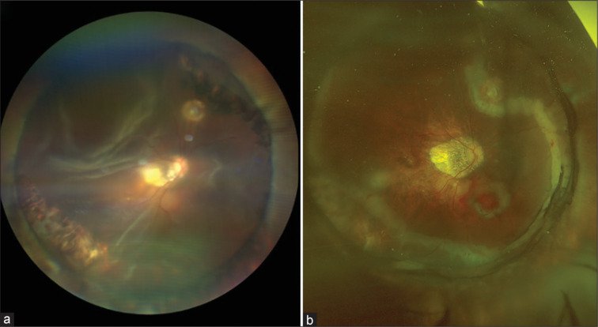
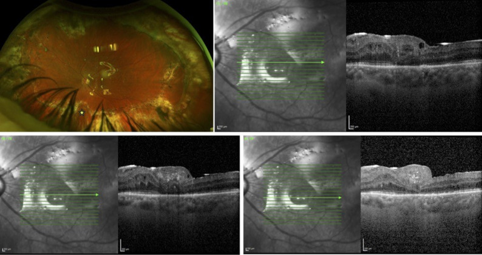
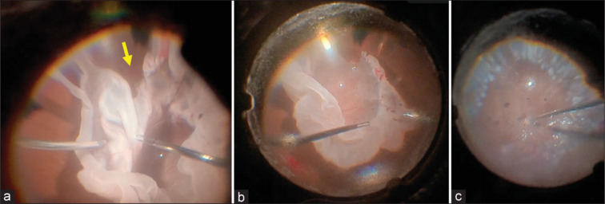

1865 — Bong võng mạc tái phát sau tháo dầu silicone: bơm lại dầu nhẹ, dầu nặng, PFCL hay khí? / Recurrent retinal detachment after silicone oil removal: choosing the next tamponade by geography
Tags: pattern:bong-tai-phat pattern:co-keo-pvr pattern:bong-phia-duoi pattern:lang-dong vung:vong-mac vung:dich-kinh vung:hoang-diem protocol:PPV protocol:widefield protocol:OCT protocol:sieu-am-B-scan score:PVR score:IOP
Mức chắc chắn (certainty): tổng hợp y văn (literature synthesis) — nhóm tự biên từ các nguồn mở, đã đối chiếu authorString/PMCID: đoàn hệ 161 mắt bong tái phát sau tháo dầu (CC BY-NC-ND 4.0, PMC11325823), tổng quan hệ thống 775 mắt tamponade PFCL (CC BY 4.0, PMC12914961), so sánh Densiron với dầu nhẹ 259 mắt (CC BY 4.0, PMC9440647), 46 mắt dầu nặng 1 tháng so với 3 tháng (CC BY-NC 4.0, PMC13427321), 8 mắt PFCL–dầu kết hợp (CC BY-NC-SA 4.0, PMC11451799), 22 mắt F6H8/dầu (CC BY 4.0, PMC3941958), 33 mắt retinotomy dưới + dầu (CC BY 4.0, PMC4673732), 4 mắt đai củng mạc từng đoạn trong mắt còn dầu (CC BY 4.0, PMC11943520). Chỗ nào là suy luận của nhóm đều ghi rõ "suy luận".
Vì sao bài này quan trọng: bài 1410 dạy khi nào lấy dầu và dầu tồn lưu trông thế nào; bài này dạy bước tiếp theo — khi võng mạc đã bong lại sau khi lấy dầu, chọn tamponade nào. Đây không phải câu hỏi "bơm lại dầu" chung chung: dầu nhẹ (0,97 g/cm³) nổi lên trên, nên nó không bao giờ đè được vùng võng mạc 6 giờ — đúng vùng hay bong lại nhất. Vì vậy cùng một "bong tái phát" nhưng chọn sai chất tamponade theo địa lý = bong lại lần nữa, còn chọn đúng = 74,9–95,5% dính tùy kỹ thuật (PMC12914961, PMC4673732). Bỏ sót hoặc chờ đợi ở mắt còn lại một mắt là mất cửa sổ cứu thị lực.
1. Tổng quan bệnh học – cơ chế hình ảnh: vì sao bong lại, và vì sao ở DƯỚI
- Con số nền: sau tháo dầu silicone (removal of silicone oil, ROSO), bong tái phát 14,9% (24/161 mắt), trung vị 4,3 tuần (2,6–11,2) sau tháo; 75,0% (18/24) là bong do PVR (proliferative vitreoretinopathy), 25,0% do lỗ mới hoặc lỗ cũ mở lại không PVR (PMC11325823). Các đoàn hệ khác trong repo ghi 15,6% (147 mắt) và 22,4% (58 mắt); y văn 5–31,4% (bài 1410).
- Yếu tố nguy cơ đã kiểm bằng đa biến: tiền sử mổ bong võng mạc thất bại là yếu tố duy nhất có ý nghĩa — OR 4,8 (95% CI 1,5–19,0; p = 0,02); PVR grade (p = 0,03) và thời gian giữ dầu (p = 0,02) có ý nghĩa ở phân tích hai biến (PMC11325823). Thời gian giữ dầu ≤ 3 tháng: bong 35,3% so với 12,5% khi giữ lâu hơn — p = 0,06, tức xu hướng, chưa đủ chắc (17 mắt trong nhóm ngắn).
- Hai "biện pháp bảo vệ" tưởng đúng mà KHÔNG đúng (điểm quan trọng nhất của bài): trong đoàn hệ 161 mắt, laser 360° (46% số mắt) và bơm khí/không khí kèm lúc tháo dầu (8,1%) không làm giảm tỉ lệ bong tái phát (PMC11325823). Giải thích: laser chỉ tạo dính tại chỗ, không ngăn được màng PVR co kéo ở vùng khác; bong khí không phủ được vùng dưới khi bệnh nhân ngồi/đứng, và tan trong 1–2 tuần — ngắn hơn cửa sổ PVR (trung vị ~2 tháng).
- Vì sao "dưới" là vùng thua cuộc — vật lý trước, mô bệnh sau:
- Tỷ trọng: dầu silicone nhẹ 0,97 g/cm³ < nước (1,00) → nổi. Khi bệnh nhân ngồi, mặt phân cách dầu–dịch nằm ngang, nên vùng võng mạc thấp nhất (6 giờ) chỉ tiếp xúc với dịch, không có sức căng bề mặt của dầu đè lên. Dầu nặng (Densiron 68, Oxane HD) có 1,02–1,06 g/cm³ → chìm, đè được vùng dưới (bài 1864).
- Sức căng bề mặt của dầu 21,2–21,3 mN/m chỉ có tác dụng tại mặt phân cách; vùng không tiếp xúc thì không có tamponade, dù bơm "đầy".
- PVR không đối xứng: tế bào RPE và đại thực bào lắng theo trọng lực, màng co kéo hình thành dày hơn ở vùng dưới; màng co lại làm bờ bong ngang (giống "mức nước"), đây là mẫu hình đọc trên ảnh góc rộng.
- Sau tháo dầu, hàng rào cuối cùng mất hẳn: dầu đang giữ võng mạc bằng lực cơ học; khi rút, lực co kéo vẫn còn, bơm RPE vẫn hoạt động, nên bong xuất hiện trong 2–6 tuần — đúng cửa sổ PVR.
- Vì sao phải phân biệt cơ chế trước khi chọn tamponade: bong do lỗ mới cần bịt lỗ + tamponade ngắn (khí/dầu); bong do PVR co kéo cần cắt màng + tamponade dài + chặn tái PVR (dầu, thường dầu nặng nếu ở dưới); bong do dầu tồn lưu/PFCL tồn lưu cần lấy chất lạ, không phải bơm thêm (bài 1410). Chọn theo "thói quen bơm dầu" là bỏ qua bước này.
- Ngưỡng định lượng dùng trong bài:
- Bong tái phát sau ROSO: 14,9%, trung vị 4,3 tuần; 75% do PVR (PMC11325823).
- Tamponade PFCL trung hạn: bong gộp 8,49%, cải thiện thị lực 74,91%, 17 nghiên cứu/775 mắt (PMC12914961).
- Dầu nặng so với dầu nhẹ ở bong nguyên phát: bong lại 10,1% vs 10,0% (p = 1,000); tỉ lệ retinectomy sau đó OR 15,3 (1,9–125,5; p = 0,011) nghiêng về dầu nhẹ (PMC9440647).
- Giữ dầu nặng 1 tháng vs 3 tháng: dính 91,6% vs 81,8% (p = 0,4) (PMC13427321).
- Retinotomy dưới + dầu ở PVR grade C: dính 100% (nhóm đai củng mạc trước đó) và 90% (nhóm đã cắt dịch kính) (PMC4673732).
- F6H8/dầu 1000 cSt: dính 21/22 (95,5%) (PMC3941958); PFCL–dầu 2 thì: dính 8/8 khi vào thì hai (PMC11451799); đai củng mạc từng đoạn trong mắt còn dầu: 4/4 (PMC11943520).
2. Mẫu hình + chẩn đoán phân biệt theo vị trí (gamut)
- Ba câu hỏi với mọi mắt bong lại sau tháo dầu: (1) bong ở đâu — dưới, trên, hoàng điểm? (2) cơ chế — lỗ mới, lỗ cũ mở, hay PVR co kéo? (3) mắt còn khả năng giữ tư thế và còn bao nhiêu thị lực để cứu?
- Theo vị trí (location):
- Bong dưới (inferior, hay gặp nhất): bờ bong ngang, co kéo dưới, thường PVR; dầu nhẹ không tamponade được → cần dầu nặng, PFCL, retinotomy dưới hoặc đai củng mạc từng đoạn.
- Bong trên (superior): lỗ mới/GRT, dầu nhẹ phủ tốt khi bệnh nhân ngồi → dầu nhẹ hoặc khí là lựa chọn hợp lý.
- Bong toàn bộ/tái phát nhiều lần: PVR nặng, thường phải cắt võng mạc (retinectomy) + dầu; tiên lượng thị lực kém.
- Bong hoàng điểm đơn độc/lỗ hoàng điểm: cần dầu hoặc khí + tư thế, cân nhắc màng ghép võng mạc (PMC13159287).
- Theo cơ chế (gamut thực hành):
- PVR co kéo: màng trước/sau võng mạc, "bờ bong ngang", lỗ không thấy rõ; không đáp ứng chỉ laser.
- Lỗ mới/lỗ cũ mở: thấy lỗ, bong hình tháp, PVR nhẹ.
- Dầu/PFCL tồn lưu gây viêm và co kéo: giọt tăng phản xạ trên OCT, dầu trong tiền phòng (bài 1410).
- Giả bong (pseudodetachment): màng trước võng mạc dày, nếp gấp hắc võng mạc, bóng dầu — OCT phân biệt, không mổ.
- Hạ nhãn áp (hypotony) + bong: mắt mềm, hắc mạc dày, tiên lượng xấu; cần xử lý nguyên nhân rò/dầu.
- Mnemonic "DŨI" cho bong lại sau tháo dầu: Down (vùng dưới — dầu nhẹ không với tới), Ũ (ứ dịch dưới võng mạc do bơm RPE), Inflammation/PVR (viêm–co kéo), Dầu/PFCL tồn lưu.
3. Bảng so sánh phân biệt (ma trận đối chiếu) — chọn tamponade theo địa lý và cơ chế
| Thực thể / lựa chọn | Hình ảnh & bối cảnh điển hình | Chốt vào (rule-in) | Chốt loại (rule-out) | Gợi ý xác nhận |
|---|---|---|---|---|
| Bơm lại dầu nhẹ (1000–5000 cSt) | Bong trên hoặc toàn bộ, lỗ ở nửa trên, bệnh nhân ngồi được | Bong trên + lỗ thấy rõ + PVR nhẹ | Bong dưới đơn thuần → dầu nhẹ nổi, không đè tới 6 giờ | Soi góc rộng tư thế ngồi, đánh dấu lỗ; OCT hoàng điểm |
| Dầu nặng (Densiron 68, Oxane HD) | Bong dưới, PVR dưới, không giữ được tư thế nằm sấp | Bong dưới + PVR dưới + không tư thế | Bong trên (dầu nặng chìm, bỏ trống phía trên); mắt có nguy cơ tăng nhãn áp do nhũ tương (bài 1864) | Siêu âm B-scan nếu không soi được; theo dõi IOP |
| PFCL trung hạn (nặng 1,7–1,9 g/cm³) | Bong dưới/GRT, cần đè cơ học mạnh, thời gian ngắn | Bong dưới tái phát nhiều lần + cần đè tối đa | Không có kế hoạch lấy sau 1–4 tuần → nguy cơ tồn lưu, độc giác mạc, tăng IOP | Lịch tháo PFCL; OCT tìm giọt dưới võng mạc |
| PFCL–dầu kết hợp (2 thì) | Bong mạn/PVR nặng, cần đè vùng dưới rồi chuyển dầu | PVR dưới + retinectomy + cần đè dưới ngay sau mổ | Theo dõi kém, không thì hai → PFCL tồn lưu | Thì hai sau 2 tuần (PMC11451799) |
| F6H8/dầu 1000 cSt | Bong dưới + PVR dưới, tỉ lệ pha 50/50–30/70 | Cần đè dưới + tránh PFCL nặng | Tỉ lệ F6H8 cao (70/30, 60/40) → đục tamponade | Quan sát độ trong của tamponade |
| Khí (SF6/C3F8) sau tháo dầu | Lỗ mới nhỏ, bong khu trú trên, PVR nhẹ | Lỗ mới + bong trên + bệnh nhân hợp tác tư thế | Bong dưới/PVR → khí không phủ và tan sớm | Không có bằng chứng giảm bong khi bơm khí lúc ROSO (PMC11325823) |
| Đai củng mạc từng đoạn (segmental buckle) | Bong dưới sớm trong mắt còn dầu, lỗ/co kéo khu trú dưới | Bong dưới khu trú + mắt còn dầu + PVR nhẹ | PVR lan rộng/toàn bộ → cần cắt dịch kính | 4/4 dính sau 6 tháng (PMC11943520) — bằng chứng rất yếu |
| Retinotomy/retinectomy dưới + dầu | PVR grade C, võng mạc co cứng không trải được | PVR C + võng mạc không trải + bong dưới | PVR nhẹ, võng mạc trải được → không cắt võng mạc | Dính 90–100% (PMC4673732) |
| Theo dõi (không mổ) | Bong khu trú ngoại vi, không đe hoàng điểm, mắt đã mù | Bong ngoại vi + không tiến triển + mắt không còn tiên lượng | Bong đe hoàng điểm/đe mắt còn lại → phải mổ | So ảnh góc rộng 1–2 tuần |

Hình (a): bong võng mạc tái phát mắt phải, thấy vành đai củng mạc và võng mạc co kéo phía dưới. Hình (b): ngày 1 sau mổ — võng mạc áp dưới dầu, các điểm laser quanh vùng rách. Nguồn: Shettigar MP và cs., Indian J Ophthalmol 2026 (PMC13056140) Fig. 1, CC BY-NC-ND 4.0 — nguyên bản, không crop/ghép.Dấu hiệu đọc ảnh quyết định chọn tamponade
- Bờ bong ngang + màng co kéo dưới = PVR dưới → dầu nặng/PFCL/retinotomy, không phải khí.
- Lỗ đơn độc ở nửa trên, võng mạc dưới áp = lỗ mới → khí hoặc dầu nhẹ, thời gian ngắn.
- Giọt tăng phản xạ dưới võng mạc/trong khoang nang = PFCL hoặc dầu tồn lưu → lấy chất lạ, không bơm thêm (bài 1410).
- Hoàng điểm bong + lỗ hoàng điểm = cần tamponade + tư thế, cân nhắc màng ghép (PMC13159287).
4. Protocol chụp – theo dõi + sơ đồ quyết định
- Trước mổ (mắt bong lại sau ROSO):
- Ảnh đáy mắt góc rộng (ultra-widefield, Optos) ở tư thế ngồi — bờ bong thay đổi theo trọng lực; chụp thêm tư thế nằm để phân biệt dịch di động.
- OCT hoàng điểm (SD-OCT): màng trước võng mạc, lỗ hoàng điểm, dịch dưới võng mạc, giọt dầu/PFCL.
- Siêu âm B-scan khi không soi được (dầu nhũ tương, đục giác mạc, xuất huyết) — xác định bong, màng, chất lạ.
- Đo nhãn áp, đếm tế bào nội mô, đánh giá thể thủy tinh/IOL, ghi PVR grade (Machemer CP1–12), vị trí lỗ theo giờ, trục nhãn cầu, mắt còn lại.
- Không chụp CT/MRI cho bong võng mạc — không có vai trò; MRI có thể thấy dầu nhưng không đổi xử trí (cạm bẫy "chụp thêm cho đủ").
- Ngưỡng quyết định (dùng trong sơ đồ): bong đe hoàng điểm hoặc mắt còn lại duy nhất → mổ trong vài ngày, không chờ; bong dưới + PVR → không dùng dầu nhẹ đơn thuần; PVR C → cân nhắc retinectomy; IOP > 30 mmHg kèm dầu → xử lý dầu/tiền phòng trước (bài 1416, 1864).
- Sau mổ: khám ngày 1, tuần 1, tháng 1, tháng 3; OCT hoàng điểm tháng 1 và 3; theo dõi IOP (dầu nặng), nhũ tương hóa, đục thể thủy tinh; lên lịch tháo dầu khi võng mạc ổn định ≥ 1–3 tháng (bài 1410).
flowchart TD
A[Bong võng mạc sau tháo dầu] --> B{Đe hoàng điểm hoặc mắt còn lại?}
B -->|Có| C[Mổ sớm trong vài ngày]
B -->|Không| D{Bong ở đâu?}
D -->|Trên, lỗ mới, PVR nhẹ| E[Khí C3F8/SF6 hoặc dầu nhẹ]
D -->|Dưới| F{PVR grade?}
F -->|PVR nhẹ, khu trú| G[Dầu nặng hoặc đai củng mạc từng đoạn]
F -->|PVR C, võng mạc co cứng| H[Retinectomy dưới + dầu nặng/PFCL]
F -->|Tái phát nhiều lần, cần đè tối đa| I[PFCL trung hạn hoặc PFCL-dầu 2 thì]
G --> J[Theo dõi IOP, OCT, lịch tháo]
H --> J
I --> J
E --> J
C --> J
5. Biến thể bình thường và cạm bẫy
- Cạm bẫy 1 — tin vào "laser 360° bảo vệ": trong 161 mắt, laser 360° không giảm bong tái phát (PMC11325823). Laser tạo dính tại chỗ, không chặn PVR; đừng vì "đã laser 360" mà trì hoãn mổ khi có màng co kéo.
- Cạm bẫy 2 — tin vào "bơm khí lúc tháo dầu": 8,1% mắt được bơm khí/không khí khi ROSO, không cải thiện tỉ lệ dính (PMC11325823). Khí tan 1–2 tuần, ngắn hơn cửa sổ PVR.
- Cạm bẫy 3 — dùng dầu nhẹ cho bong dưới: dầu 0,97 g/cm³ nổi; vùng 6 giờ không được đè → bong lại. Đây là lỗi hệ thống, không phải "ca khó".
- Cạm bẫy 4 — bỏ sót PFCL tồn lưu: giọt PFCL 1,7–1,9 g/cm³ lắng dưới võng mạc, gây viêm/co kéo; trên OCT là giọt tăng phản xạ dưới võng mạc, dễ bị đọc là "dầu tồn lưu" (bài 1410). Phải lấy, không bơm thêm dầu.
- Cạm bẫy 5 — tưởng "dính dưới dầu" là khỏi: võng mạc áp trong lúc còn dầu không đồng nghĩa áp sau tháo; bong xuất hiện trung vị 4,3 tuần sau tháo (PMC11325823) — cần hẹn khám đúng cửa sổ này.
- Biến thể bình thường dễ nhầm: nếp gấp hắc võng mạc sau đai củng mạc, bóng dầu ở mặt phân cách, màng trước võng mạc mỏng — đều giả bong trên ảnh đáy mắt, OCT phân biệt; không mổ chỉ vì "thấy đường trắng".
- Bẫy mặt cắt/ảnh: bờ bong thay đổi theo tư thế — ảnh chụp ngồi khác ảnh chụp nằm; luôn ghi tư thế khi chụp, nếu không sẽ đo sai diện bong và đánh giá sai tiến triển.
6. Tự lượng giá — Blind Quiz
Ca 1 — Nam 60 tuổi, mắt phải đã bơm dầu 5 tháng, tháo dầu 3 tuần trước, nay mờ dần. Nhìn ảnh trước và sau mổ, mô tả trước khi mở đáp án.
- Gợi ý: có vành đai củng mạc; bong ở vùng nào? Bờ bong có đặc điểm gì?
- Hỏi: 3 chẩn đoán phân biệt? Dấu hiệu nào quyết định chọn tamponade?
Bấm để hiện đáp án
- Dấu hiệu: bong võng mạc tái phát phía dưới, bờ bong ngang, co kéo quanh vành đai củng mạc; sau mổ võng mạc áp dưới dầu, điểm laser quanh vùng rách.
- Chẩn đoán: bong tái phát do PVR/co kéo dưới sau tháo dầu — cơ chế đúng của 75% ca bong lại (PMC11325823).
- Vì sao chọn dầu nặng/PFCL: dầu nhẹ nổi, không đè được 6 giờ; bờ bong ngang là dấu hiệu "vùng dưới không được tamponade".
- Nguồn ảnh: Shettigar MP và cs., Indian J Ophthalmol 2026 (PMC13056140) Fig. 1, CC BY-NC-ND 4.0.
Ca 2 — Bong dưới tái phát + PVR grade C + lỗ hoàng điểm; đã retinectomy 180°. Nhìn ảnh hậu phẫu, đọc cái gì còn và cái gì mất.

- Gợi ý: võng mạc áp chưa? Hoàng điểm đóng chưa? Có màng ghép không?
- Hỏi: vì sao phải retinectomy? Nếu ảnh này chụp sau 1 tuần mà vẫn thấy dịch dưới võng mạc, xử trí?
Bấm để hiện đáp án
- Dấu hiệu: võng mạc áp dưới dầu sau retinectomy 180° + màng ghép võng mạc tự thân; OCT cho thấy lỗ hoàng điểm đã đóng ở một số lát cắt, còn thay đổi cấu trúc hoàng điểm.
- Chẩn đoán: bong dưới phức tạp có PVR + lỗ hoàng điểm — cần retinectomy + tamponade dài, không thể chỉ laser/khí.
- Nếu còn dịch dưới võng mạc ở tuần 1: không vội mổ lại nếu khu trú và không đe hoàng điểm; theo dõi OCT 1–2 tuần vì dịch có thể tự tiêu dưới dầu; mổ lại khi tăng lên hoặc đe hoàng điểm.
- Nguồn ảnh: Madani R và cs., Int J Retina Vitreous 2026 (PMC13159287) Fig. 1, CC BY 4.0.
Ca 3 — Mắt bong dưới tái phát lần 3, PVR nặng, võng mạc co cứng không trải được. Nhìn ảnh trong mổ, mô tả thứ tự thao tác.

- Gợi ý: (a) võng mạc co cứng; (b) chất lỏng nặng đè võng mạc; (c) trao đổi với dầu.
- Hỏi: vì sao phải cắt võng mạc thay vì bóc màng? PFCL dùng để làm gì và lấy khi nào?
Bấm để hiện đáp án
- Dấu hiệu: (a) retinectomy 360° + retinotomy thư giãn (mũi tên vàng) vì võng mạc co cứng; (b) PFCL đè làm trải võng mạc trong lúc bóc màng hai tay; (c) trao đổi PFCL–dầu khi võng mạc đã trải.
- Vì sao cắt võng mạc: khi màng PVR làm võng mạc co cứng không thể trải bằng bóc màng, cắt bỏ dải co là cách duy nhất để võng mạc áp lại; đánh đổi là mất vùng võng mạc đó (thị trường).
- PFCL: nặng 1,7–1,9 g/cm³, đè vùng dưới tốt; phải lấy hết trong thì sau (2 tuần) — tồn lưu gây viêm/co kéo (PMC11451799).
- Nguồn ảnh: Agarwal A và cs., Indian J Ophthalmol 2024 (PMC11727936) Fig. 1, CC BY-NC-SA 4.0.
Bài liên quan chéo
- 445 – Bong võng mạc: tổng quan chẩn đoán và nguyên tắc mổ
- 1410 – Lấy dầu silicone & dầu tồn lưu: khi nào lấy, nhũ tương hóa, bong tái phát
- 1864 – Dầu silicone NẶNG: vì sao biến chứng ở phía dưới
- 1863 – Đục thể thủy tinh ở mắt bơm dầu silicone
- 1416 – Glôcôm do dầu silicone: pupillary block & bít bè
- 1432 – Thay dầu silicone: khi nào, kỹ thuật, biến chứng
- 1402 – Bong võng mạc sau viêm nội nhãn
- 400 – Tổng quan Mắt & thị giác
Ảnh
- Tên file:
1865_bong-tai-phat_<Modality>_<SourceID>.jpg; nguồn + giấy phép từng ảnh ởimages/CREDITS.md. - Ảnh tải từ Europe PMC (CC BY / CC BY-NC-ND / CC BY-NC-SA), nguyên bản, không crop/kéo giãn; ảnh CC BY-NC-ND không đưa vào ảnh ghép.
- EyeWiki / Retina Image Bank / AuntMinnie / Radiopaedia: chỉ dẫn link, không tải (xem
sources.md).
Không dùng để chẩn đoán độc lập khi chưa có người hướng dẫn.